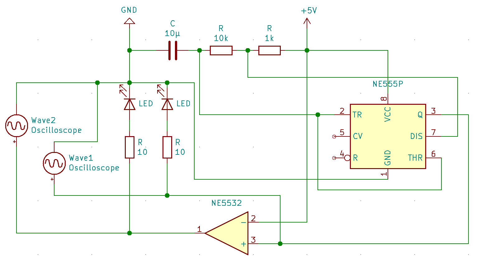

German:
Ein kleines Projeckt für zwischendurch.
Ich hatte noch 555-Timer zuhause rumliegen.
Da durch das ich ein neues Oszilloskop mir geleistet habe, wollte ich es ausprobieren.
Ich habe verschiedene Pläne online gesehen, wie ich es umsetzten kann.
Beim ausprobieren kam mir die Idee noch LEDs einzubauen.
Material - List:
1. 555-Timer
2. Kondensator
3. Widerstände
4. LED
English
A small project for in between.
I still had 555 timers lying around at home.
I've a new oscilloscope i wanted to try it.
I've seen various plans online on how to implement it.
When I tried it out, I came up with the idea to install LED.
Material - List:
1. 555-Timer
2. Capacitor
3. Resistors
4. LED
